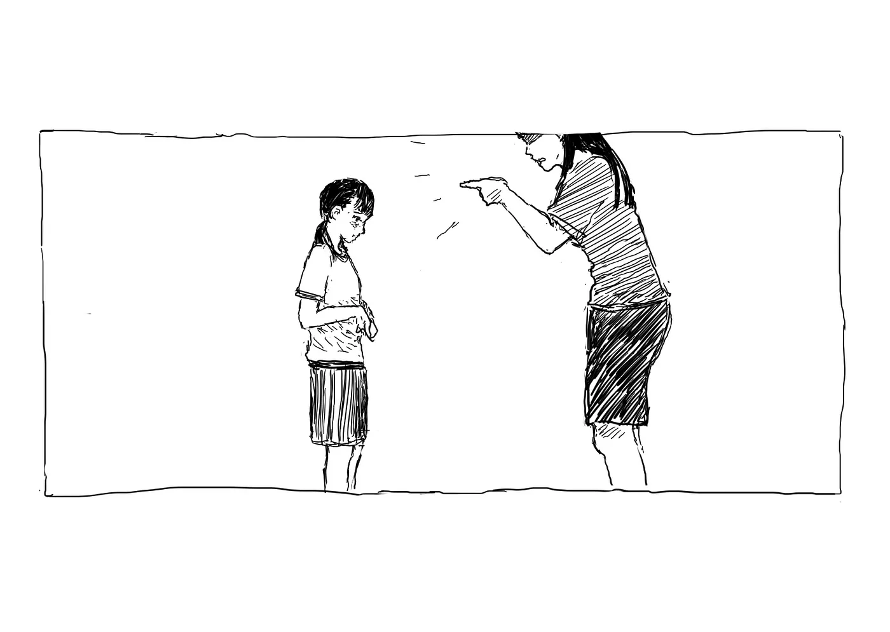
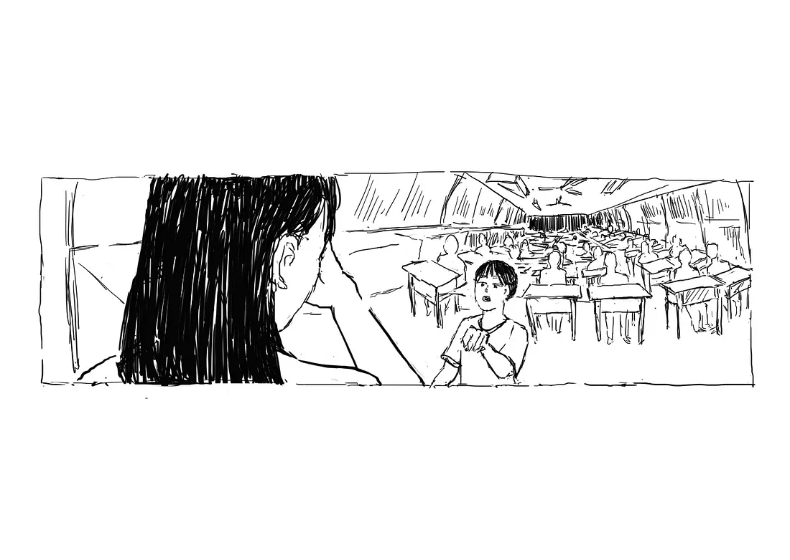

烏鴉先生，【20】 插畫集
我們只能見到那烏鴉張開雙翅 | 線上閱讀版「記憶中的那個同學，在這幾年已不在人間。」
# 01 草莓事件
那天是９／２８，跟許多重要的事一樣都在２８號。
：誒你看這個草莓好好丟喔！
：他都砸不爛耶！
：老師是不是請假啊？都上課15分鐘了。
：誒 12 號，小心不要丟掉人！
：好啦！
（班級吵雜）
……
（碰！）
：媽勒 ⋯⋯
：靠，你砸到國父了！
突然間大家都安靜了下來，圍觀講台前落在地上的相框。
：小心不要踩到碎玻璃，我去拿掃把。
：陳阿臨你完蛋了！
：國父啊，你死的好慘。
：大家借過。
（敲擊黑板聲）
：你們再吵什麼？
：老師有人把國父砸死了。
……
：全部都給我回座位！！到底在幹嘛。
大家愣了一下，回到座位。
：掃地的繼續掃。我真的要被你們氣死，我跟主任談個事情班上就亂成這樣。全班都給我抄第五課課文十遍。
（：十遍？！全班嗎）
：老師，那個是陳阿臨丟的耶。
：他丟的但你們都沒有阻止，所以大家都有錯。這是團體生活，一個人作亂，大家漠視，所有人都會受到影響。
：啊老師我們那時候不在教室耶？
：都一樣，上課時間，你們不該在外面打球！全都抄，再吵就加倍！
(班級吵雜聲)
下課的時候，我看到班長黃晴跟老師在外面講話。
-
從那之後國父就被收在講台的抽屜中。
國父離開了，而故事開始了。

# 02 班級議會
那些日子，我們充滿著理想，使用著別人的動機。
：在我們國小裡並沒有學生團體能與老師行政權相互制衡，這導致了教師獨裁以及傀儡政府（幹部），他們透過家家酒版的假選舉讓我們感覺到民主。
：但那不是民主，那不是學生自治，那是校方騙我們的技倆，他們認為國小生不該擁有主權。
：大人們不該剝奪我們的權力！我們要反抗他們不理性的態度與規定！擊潰恐龍教師的威脅與言語暴力！反對沒道理的連坐法！爭取我們生而為人的自由！
因此自治班級議會的概念，就這麼產生了。
：請 601 班全體學生到學務處前集合。
：這是誰貼的？
……
：為什麼要貼這些東西在走廊上？
……
：不但沒有申請，還是這種亂七八糟的東西。把學校當自己家了啊！
……
：你們這什麼班級啊。還搞什麼連署。
……
：都已經六年級了，你們做事要照規矩來，要做低年級的榜樣，好好讀書，不要給我帶頭作亂。
……
：把你們那些連署廢紙給我，然後把海報全部撕下來，有沒有問題？
……
(黃晴作勢要舉手)
：我操。雙馬尾留下來，其他回教室。
……
：你，進學務處。
：現在是怎樣？想造反..是…
：那些海報 ⋯⋯ 是大家一起辛苦做 ⋯⋯
：你給我安靜！我有說你能講話嗎？
：……
：你剛剛是不是故意抓頭？你有什麼問題，你是看不起我是嗎！別以為我不知道你們這些小朋友在玩什麼把戲。媽的。（撕連署書）
(黃晴哭了。)
：再哭啊，做錯事情只知道哭。哭沒辦法解決問題。還不道歉啊。
……
：回教室。出去。
那天，老師讓我跟黃晴交換幹部職位，所以我變成了班長，她變成了副班長。
-
班上都知道，黃晴為著班級議會做了很多；大家也都看見了，她回班上遮著臉啜泣的樣子。
-
當時的我看著抽屜裡碎裂的國父，腦袋裡浮現出了「兩個字」。
# 03 時代隔閡
她很真誠的講了一段，那時我無法理解的話。
：真的要這樣做嗎？
：……
：嗯？
：……
：你怎麼了？
：我喜歡像這樣握住掌心的空氣，告訴自己 ⋯⋯ 我並不能真正抓住什麼 ⋯⋯
：……
：但我擁有此時此刻。
（細雨聲）
：我以為你在用雨洗手。
：開始吧。
（喧鬧的教室）
「不溝通，不開門！」
「不溝通，不開門！」
「不溝通，不開門！」
：機動組！用桌子擋好門！
（：一二三！）
（：開始直播囉！）
：601 的同學們，今天，我們受夠了學校無理的規定！我們受夠了他們語言的暴力！今天，是學生權實現的一天，我們要一起擊潰體制的壓迫！今天不會再有同學哭了！
：也許大人們能限制我們的行為，懲處我們，但他們不能以此剝奪我們思想、抹滅我們胸口的炙熱。我們要奪回我們該有的，哪怕這將導致我們失去所現有得和平假象。
：但我們和他們不一樣！雖然說「不溝通不開門！」，但只要老師與校方願意坐下來，與我們好好溝通，我們會馬上復原教室以及課程。我們跟大人一樣值得被尊重，我們不需要連坐罰、不該被大吼大叫污辱，我們需要的是理性溝通！
33 分鐘的圍城，與老師主任有了多次的交涉。
起初，他們態度非常惡劣想盡方法破門而入，還拿記過威脅我們，但當他們看見我們在開直播時，他們開始思考溝通的可能性。
班導出面與我交涉，她答應我們從班會的形式開始發展班級議會。並希望能建立起與班上同學溝通的管道，不要以這麼極端的方法使得課無法進行。
事後我們恢復了教室，而這件大事也在我們學校裡廣為流傳。就差沒有被新聞報導出來而已。
-
這個事件使得那時的我們充滿著熱情，每天放學留下來討論彼此對班級議會的想像，我們甚至在一本筆記本寫了組織章程。
第一次班會那天我是會議主席，大家都到齊了，老師拿了一張同學的木椅坐在前面。
：班級的混亂是我們共同的責任。我們班為什麼會這麼亂，大家把自己認為的原因寫在紙上，匿名喔。老師也請你寫寫看。
老師她沒有動筆。
-
：大家把紙條收到這個盒子裡喔，我們等等可以一起討論。
這時候老師突然把盒子搶走。
：老師？你要幹嘛？
她翻出我寫的那張紙條。


老師凝視著那張紙條，然後在大家面前哭了。
她很真誠的講了一段，那時我無法理解的話。
並匆匆離開了教室。
從那之後，一直到畢業她都沒有再提過那天的事情。
跟心中的不解一樣，我們議會也被懸在那，始終沒有個結論。